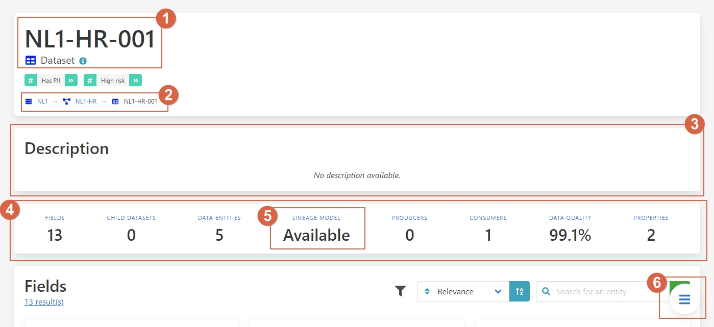

Streamlining Data Impact Analysis
In organizations, data from various sources undergoes transformation using specific technologies, involving multiple steps where changes can impact downstream processes. Data scientists and integration experts rely on impact analysis to assess these effects. They face challenges such as dependency management, unclear data lineage, complex impact assessment, and identifying ownership.
Challenges
- Dependency Management: Overlooking dependent steps can lead to data processing failures.
- Data Lineage Clarity: Lack of visibility into data flow complicates tracing origins.
- Impact Assessment: Assessing changes across interconnected systems is time-consuming.
- Ownership Identification: Identifying responsible parties for data usage is challenging.
Benefits and Features
- Data Integrity: Visualizing data lineage ensures reliability.
- Change Management: Tools assess schema or transformation impacts.
- Data Governance: Tracks data usage and responsibilities.
- Efficiency: Centralized access accelerates decision-making.
Walkthrough
Consider an implementer extending a table schema to ensure subsequent processing adjustments.
Step-by-Step Guide
The table we want to extend is NL1-HR-001. Since we're interested in the technical specifications of the table, use the Technical Context search input and search for NL1-HR-001.

We will receive a list of all results related to NL1-HR-001. We are interested in the table, so click on the entity NL1-HR-001 with type Dataset. 0 
{kind=link}
In this overview, we find the following segments:
- Name and type of the entity.
- Breadcrumb showing the entity hierarchy.
- Description of the entity.
- Summary of all page elements.
- Lineage model availability.
- Navigation button for quick access.
We are looking for the data lineage. Therefore, click on Lineage Model in segment (5) or use the navigation button (6).

The lineage model shows the position of the entity in the data flow. It clarifies where the data comes from and where it flows to. In this case, we see that the entity NL1-HR-001 is a source dataset used and processed in the organization.
To get details of each entity in the lineage model, click on the icon in the image to open the detail panel on the right-hand side.

In the details, we find:
- Name and type of the entity.
- Summary of data governance metrics.
- Properties of the entity.

Let’s follow the flow of the data. If you click on the next entity called Change-event, you can see how the data changes to a Kafka topic. Thereafter, you can see that this Kafka topic converts into an Elastic index.
With the lineage graph, you can see where the data is going and where it comes from. This is not limited to a particular system but spans across different applications and environments tracking governance information. Following these steps, the implementer can learn where the data is used and what subsequent processing can be affected by extending the schema.